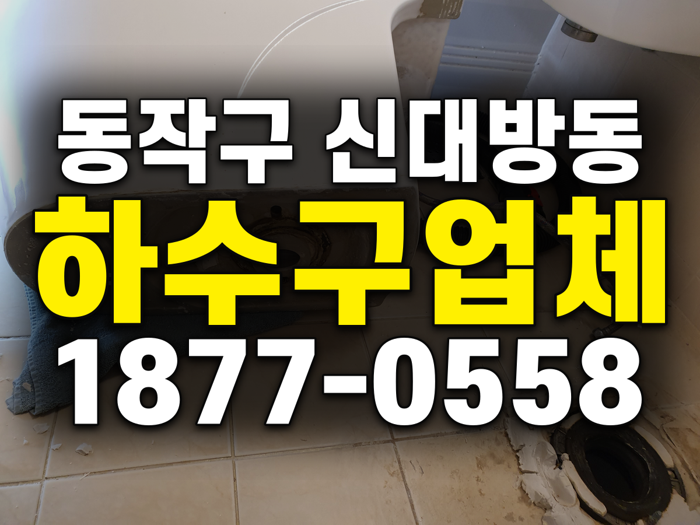
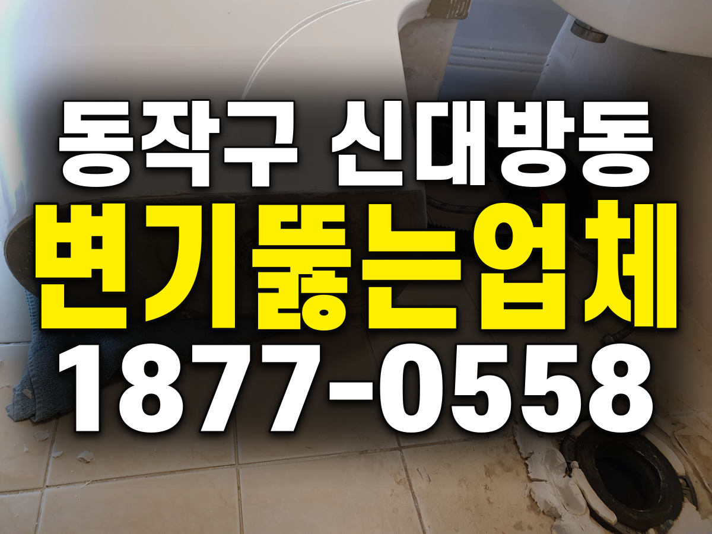
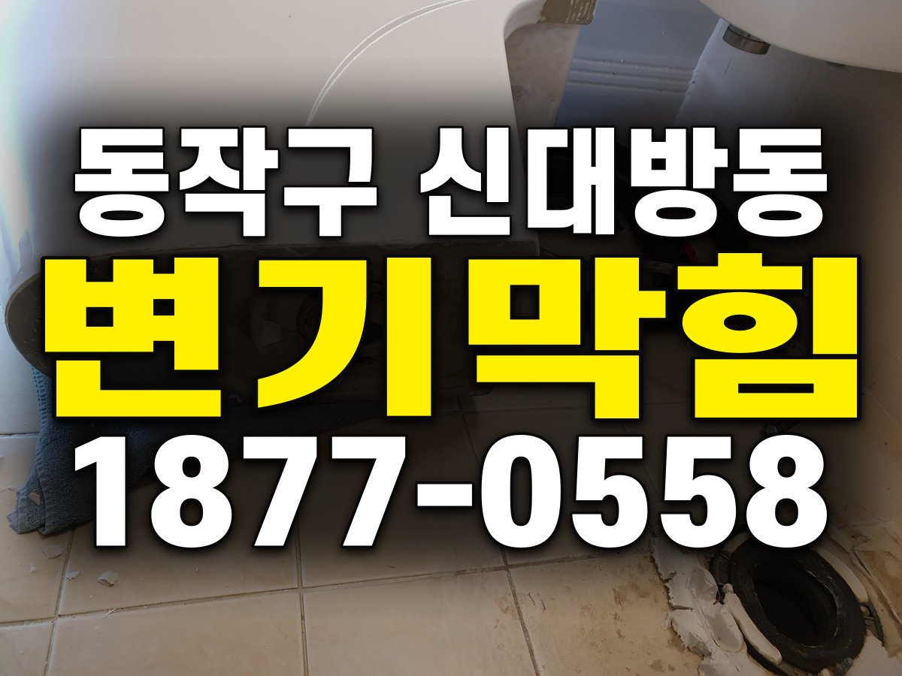

동작구 신대방동 하수구막혔을때 변기막힘 사례, 변기 출구에 걸린 플라스틱 제거 사례
배수 불편의 원인이 변기 하부에 남은 플라스틱이었던 현장입니다. 탈거 후 이물질을 꺼내고 재부착과 정상 통수 확인까지 진행했습니다.
서울특별시 FIELD NOTES
실제 출동 기록이 있는 지역을 중심으로 변기·싱크대·하수구·배관 작업 사례를 연결합니다.
배수 불편의 원인이 변기 하부에 남은 플라스틱이었던 현장입니다. 탈거 후 이물질을 꺼내고 재부착과 정상 통수 확인까지 진행했습니다.

변기 하부에 걸린 플라스틱을 꺼내기 위해 탈거와 재부착을 진행한 사례입니다. 금액보다 실제로 필요한 작업 범위를 중심으로 소개합니다.

오수관 아래로 넘어가지 않고 변기 출구에 걸린 플라스틱을 제거했습니다. 변기 탈거와 재부착, 마감 및 정상 통수 확인까지 진행했습니다.

변기 하부에 걸쳐 있던 플라스틱을 탈거 후 제거했습니다. 오수관 아래로 내려가기 전에 회수하고 변기를 재설치한 신라건축설비 작업 기록입니다.

뚜껑·마개 형태의 플라스틱이 변기 하부에 걸린 현장입니다. 변기를 탈거해 이물질을 꺼낸 뒤 재부착하고 정상 통수까지 확인했습니다.
식당 주방의 기름때 막힘과 배관 일부 파손을 함께 처리했습니다. 샤프트 작업과 파손 구간 철거·신설 후 안정적인 통수를 확인했습니다.
식당 주방의 기름때 막힘과 배관 일부 파손을 함께 처리했습니다. 샤프트 작업과 파손 구간 철거·신설 후 안정적인 통수를 확인했습니다.
식당 주방의 기름때 막힘과 배관 일부 파손을 함께 처리했습니다. 샤프트 작업과 파손 구간 철거·신설 후 안정적인 통수를 확인했습니다.

식당 주방의 기름때 막힘과 배관 일부 파손을 함께 처리했습니다. 샤프트 작업과 파손 구간 철거·신설 후 안정적인 통수를 확인했습니다.
식당 주방의 기름때 막힘과 배관 일부 파손을 함께 처리했습니다. 샤프트 작업과 파손 구간 철거·신설 후 안정적인 통수를 확인했습니다.

변기 탈거 후 오수관을 작업한 석촌동 하수구막힘 사례입니다. 샤프트·스프링 작업으로 비닐과 물티슈를 제거하고 외부 정화조 출수관을 점검했습니다.

석촌동 1층 비닐·물티슈 제거 사례로 살펴보는 작업 범위입니다. 변기 탈거, 샤프트·스프링 구동기, 외부 내시경 점검과 통수 확인 항목을 정리합니다.